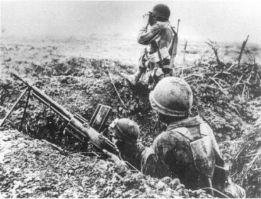

Dien Bien Phu’daki Fransız piyadeleri, Nisan 1954
Her şey iyi niyetle başladı, İkinci Dünya Savaşı’ndan sonraki yirmi yıl, Amerika, dağılmış dünyanın parçalarını bir araya getirip, yeni bir uluslararası düzen kurmak için liderliği üstlendi. Amerika Avrupa’yı iyileştirdi, Japonya’yı restore etti, Yunanistan, Türkiye, Berlin ve Kore’de komünist yayılmacılığı bastırdı, ilk barış zamanı ittifakını yaptı ve kalkınmakta olan dünyaya teknik yardım programını başlattı. Amerikan şemsiyesi altındaki ülkeler, barış, refah ve istikrarın tadını çıkarıyorlardı.
Ancak Çinhindi’nde, Amerika’nın önceki ülke dışı çalışmalarının gösterdiği tüm örnekler parçalandı. Amerika’nın XX. yüzyıldaki uluslararası deneyiminde ilk kez, Amerikan ulusunun değerleri ile başarıları arasındaki doğrudan doğruya ve nedensel ilişki yıpranmaya başladı. Kendi değerlerinin çok fazla evrensel uygulaması, Amerikalılar arasında bu değerlerin niçin Vietnam’a uygulandığını sorgulamalarına neden oldu. Amerika’nın ulusal deneyimlerinin farklığına olan inanç ile komünizmi çevrelemenin jeopolitiğinde doğal olarak bulunan ödünler ve belirsizlikler arasında bir uçurum doğdu. Vietnam potasında, Amerika’nın kendi farklılığına olan inancı, kendine döndü. Amerikan toplumu, başkalarının yapabileceği gibi, politikalarının pratik eksikliklerini değil, Amerika’nın herhangi bir uluslararası rolü izleyecek kadar değerli olup olmadığını tartıştı. Vietnam tartışmasının bu yönü, Amerika’nın bünyesinde çok acı verici ve iyileşmesi çok zor yaralar açtı.
Bir devletin hareketlerinin sonuçları ile o hareketleri yaparken taşıdığı orijinal niyeti arasında ancak bu kadar çelişki olabilirdi. Vietnam’da Amerika, Richeli-eu’nün üç yüzyıl önce koyduğu temel dış politika prensibini kaçırdı: “...desteklenecek şey ile onu destekleyecek güç, geometrik olarak orantılı olmalıdır.” (Bkz. Bölüm 3) Ulusal çıkar analizine göre ayarlanmış olan bir jeopolitik yaklaşım, stratejik bakımdan önemli olan ile yüzeysel olanı ayırt edebilmelidir. Sormak gerekir ki, 1948’de komünistler muazzam Çin ödülünü alırken, Amerika bir kenarda durup beklemeyi ulusal güvenliği bakımından niçin tehlikeli görmedi de, 150 yıldan beri bağımsız olmayan ve mevcut sınırları içinde hiçbir zaman bağımsız olmamış olan küçük bir Asya ülkesi için ulusal güvenliğini tehlikede gördü?
XIX. yüzyılda, Realpolitik’in en büyük uygulayıcısı olan Bismarck, iki en yakın müttefiki Avusturya ve Rusya’yı, Alman sınırlarından birkaç yüz mil ötedeki Balkanlar’da karışıklık yüzünden kavgalı olduklarını görünce, Almanya’nın Balkan sorunları yüzünden savaşa kalkışmayacağını açıkça anlattı; Bismarck’a göre, Balkanlar, kendi sözleri ile, tek bir Pomeranyalı askerin kemiklerine dahi değmeyecek bir bölgeydi. Birleşik Devletler hesaplarını aynı cebir üzerinde yapmadı. XIX. yüzyılda, kurnaz bir dış politika uygulayıcısı olan Başkan John Quincy Adams, vatandaşlarını, “uzak diyarlardaki canavarların” peşinde ülke dışında tehlikeli işlere girişilmemesi hakkında uyarmıştı. Ancak dış politikaya Wilsoncu yaklaşım, öldürülecek canavarlar arasında bir ayırım yapmaya izin vermiyordu. Dünya düzenine yaklaşımı evrensel olan Wilsonculuk, çeşitli ülkelerin nispi önemi ile ilgili herhangi bir analiz yapmadı. Amerika, bölgesel şartlar ne olursa olsun ve jeopolitikten bağımsız olarak doğru olan bir şey için çarpışma zorundaydı.
XIX. yüzyıl boyunca, başkanlar birbiri ardına Amerika’nın “bencil” çıkarları olmadığını; Amerika’nın başlıca uluslararası amacının, evrensel barış ve ilerleme olduğunu ilan etmişlerdi. Bu ruh hali içinde, Truman 20 Ocak 1949 tarihindeki ilk başkanlık konuşmasında, ülkesinin “bütün ulusların ve bütün halkların kendi kendilerini uygun gördükleri şekilde yönetmekte özgür oldukları...” bir dünya hedefinin gerçekleşmesine kendisini adadığını söyledi. Ulusal hiçbir çıkar izlenmeyecekti: “Biz toprak kazancı peşinde olmadık. Kendi irademizi kimseye empoze etmedik. Diğerlerine vermediğimiz hiçbir ayrıcalık istemedik.” Birleşik Devletler “barış ve güvenliğin korunması için, bizimle işbirliği yapacak özgür ülkelere, askeri danışmanlık ve teçhizat sağlayarak özgürlüğü seven ülkeleri saldırının tehlikelerine karşı kuvvetlendirecektir.”{846} Her bağımsız ülkenin özgürlüğü, bu ülkelerin Birleşik Devletler için stratejik önemine bakılmaksızın ulusal hedef olmuştur.
Eisenhower, her iki başkanlığa başlangıç konuşmasında, aynı temayı biraz daha yüksek bir dille yaptı. Taçların devrildiği, geniş imparatorlukların haritadan silindiği ve yeni ulusların ortaya çıktığı bir dünya anlattı. Bu karışıklar içinde, kader Amerika’ya coğrafi endişelerden ve ulusal çıkar hesaplarından uzak olarak özgürlükleri savunma görevi vermişti. Gerçekte, Eisenhower böyle hesaplara bütün ulusların eşit görüldüğü Amerikan değerler sistemine zıt düştüğünü söylemiştir:
“Özgürlüğün savunmasını, özgürlük gibi tek ve bölünmez olarak algılayarak, tüm kıtalara ve insanlara eşit gözle bakıyoruz, şeref bakımından aralarında bir ayırım gözetmiyoruz. Bir ırkı diğer bir ırka, bir halkı diğer bir halka karşı üstün tutmayı, diğerini aşağılamayı veya gözden çıkarmayı reddediyoruz.”{847}
Eisenhower Amerikan dış politikasını açıklarken, onun diğer herhangi bir ulusun dış politikasına benzemediğini; risklerin ve ödüllerin dengelenmesinin doğal bir sonucu olarak değil, Amerikan ahlaki yükümlülüklerinin bir devamı olduğunu söyledi. Amerikan politikalarının testi, değerlilik gibi bir değerlendirmeye dayanmıyordu: “Çünkü tarih, özgürlüğün korunmasını zayıf ve korkağa vermemektedir.”{848} Liderliğin kendisi bir ödüldür; Amerika’nın yararı, kendilerine yardım etmeleri için diğerlerine yardım etme ayrıcalığı olarak tanımlandı. Böyle algılanan bir fedakârlığın politik veya coğrafi bağları yoktur.
Başkanlığa seçildiği zaman yaptığı ilk konuşmada, Kennedy Amerika’nın dünyaya karşı fedakârlık ve görev anlayışını daha da ileri götürdü. Kendi kuşağının, dünyanın ilk demokratik devriminin torunları olduğunu ilan eden Kennedy, yüksek ve heyecanlı bir dille, yönetiminin “bu ulusun yurtiçinde ve dışında daima bağlı olduğu insan haklarının yavaş yavaş bozulmasına izin vermeyeceğini” taahhüt etti: “Hakkımızda iyi veya kötü şeyler düşünen her ulus bilsin ki, özgürlüğün yaşaması ve başarılı olması için her bedeli ödemeye, her yükü taşımaya, her güçlüğe katlanmaya, her dostu desteklemeye, her düşmana karşı olmaya hazırız.”{849} Amerika’nın genel küresel yükümlülüğü, herhangi bir özel ulusal güvenlik çıkarıyla bağlantılı değildi ve dünyanın hiçbir ülkesini veya bölgesini bu yükümlülüğün dışında tutmamıştı. Kennedy’nin bu konuşması, Palmerston’un Büyük Britanya’nın dostları değil, çıkarları olduğu sözünün tam tersidir; Amerika’nın, özgürlük yolundaki çabasında, çıkarları değil, dostları vardır.
Lyndon B. Johnson’un 20 Ocak 1965’teki başkanlık başlangıç konuşmasında, bu genel kabul gören görüş, Amerika’nın organik olarak demokratik hükümet sisteminden kaynaklanan dış politika yükümlülüklerinin, iç ve uluslararası sorumluluklar arasındaki farkı toptan silip attığı noktasına kadar gelmişti. Johnson, Amerika için hiçbir yabancının ümitsiz durumda olmadığını söyledi.
“Bir zamanlar ‘yabancı’ dediğimiz müthiş tehlikeler ve sıkıntılar, şimdi devamlı olarak içimizde yaşıyor. Amerikalıların hayatları, çok az tanıdığımız ülkelerde sona erecek ve hazinesi tükenecek ise, o zaman bu, inancımızın ve ebedi anayasamızın istediği bir bedeldir.”{850}
Çok sonraları, bu çeşit sözleri, kuvvetin verdiği gururun veya Amerika’nın hakim olma arzusundan doğan ikiyüzlülüğün bir ifadesi olarak kullanmak moda oldu. Böyle kolay sinisizm, Amerika’nın politik inancının özünün yanlış yorumlanması demektir; çünkü bir zamanlar “naif’ olan bu politik inançtan, olağanüstü çabalarda gerekli olan ivme doğdu. Birçok ülke, güvenliğine karşı somut ve tanımlanabilir tehdit olduğunda savaşa girer. Bu yüzyılda, Amerika, I. Dünya Savaşı’ndan 1991’deki Körfez Savaşı’na kadar, ortak güvenliğin bir koruyucusu olarak saldırıya veya haksızlığa karşı koymak yönündeki ahlaki yükümlülükleri yüzünden savaşa girmiştir.
Amerikan liderleri kuşağı içinde, özellikle gençliklerinde Münih trajedisini yaşayanlar, bu çeşit yükümlülük sözlerini sık sık dile getirmişlerdir. Nerede ve ne zaman olursa olsun, saldırıya karşı koymakta gösterilen başarısızlıktan çıkardıkları ders, bu insanların psikolojisine öyle işlemiştir ki, böyle bir saldırıya sonradan daha kötü şartlar altında bile olsa karşı koyma zorunda kalmalarını sağlamıştır. Cordell Hull’dan başlayarak her Amerikan dışişleri bakanı bu temayı seslendirmiştir. Bu, Dean Acheson ve John Poster Dulles’ın üzerinde anlaştıkları bir konudur.{851} Uzak bir ülkenin komünistlerce ele geçirilmesinin doğurduğu özel tehlikelerin jeopolitik analizi, soyut saldırıya karşı koymak ve komünizmin daha çok yayılmasını önlemek şeklindeki çifte slogana göre, ikinci derecede bir şey addedilmiştir. Çin’deki komünist zaferi, Amerikan politikacılarında, bundan sonra komünist genişlemesine hoşgörü ile bakılamayacağı inancını iyice kuvvetlendirdi.
O dönemin politik belgeleri ve resmi açıklamaları da bu inanca kimsenin karşı çıkmadığını göstermektedir. Şubat 1950’de, Kore anlaşmazlığının başlamasından dört ay önce, 64 numaralı NSC dokümanı, Çinhindi’nin “Güneydoğu Asya’nın bir kilit bölgesi olduğu ve yakın tehdit altında bulunduğu”nu belirtmiştir.{852} Memorandum, Domino Teorisi denilen ilk çıkışa işaret etmiştir ve buna göre Çinhindi’nin düşmesi durumunda, bunu kısa bir süre sonra Burma ve Tayland’ın izleyeceği ve “Güneydoğu Asya’daki dengenin büyük bir tehlike içine gireceği” tahmini yapılmıştır.{853}
1951 Ocağı’nda Dean Rusk şöyle bir açıklamada bulundu: “Elimizden gelen en büyük bir dikkatle izlemekte olduğumuz yolda ihmal göstermek, Çinhindi’ndeki ve sonuçta Güneydoğu Asya’nın geri kalan kısmındaki çıkarlarımız için felaket olur.”{854} Bir önceki yılın nisanında 68 numaralı NSC dokümanı, Çinhindi’nde küresel dengenin tehlikede olduğu sonucuna işaret etmiştir: “Kremlin’in hegemonyası altındaki bölgede herhangi bir önemli genişleme, Kremlin’e karşı daha büyük bir güçle karşı koyabilecek uygun bir koalisyonun sağlanamaması ihtimalini ortaya çıkarır.”{855}
Ancak bu belgenin işaret ettiği gibi her komünist kazancının Kremlin tarafından kontrol edilen bölgeyi daha da genişlettiği doğru muydu? (Özellikle de Titoizm deneyimi göz önünde tutulursa) Çinhindi’nin komünist kampa katılmasının kendiliğinden küresel güç dengesini bozması anlaşılır bir şey miydi? Bu sorular ortaya atılmadığından, Amerika, hiçbir zaman Güneydoğu Asya’daki jeopolitik realite olan küresel yükümlülüğünün gereğinden fazla genişleme noktasına eriştiğini kavrayamadı. Walter Lippmann önceden bu konuda dikkatli olunması uyarısında bulunmuştu. (Bkz. Bölüm 18)
Gerçekte tehdidin doğasında büyük farklılık vardı. Avrupa’da başlıca tehdit Sovyet süper gücünden geliyordu. Asya’da Amerikan çıkarlarına tehdit, en iyi koşulda, Sovyetler Birliği’nin taşeronları olan ikinci derecedeki kuvvetlerden geliyordu ki, bunların üzerinde Sovyet kontrolü olup olmadığı da ayrıca sorgulanabilirdi. Gerçekte, Vietnam savaşı ilerledikçe, Amerika, taşeronun taşeronu ile çarpıştı ve bunların her birisi kendisinden bir derece büyük olan ortağa tam bir güvensizlik duyuyordu. Amerikan analizine göre, küresel denge, Kuzey Vietnam’ın saldırısı altındaydı. Kuzey Vietnam’ı Pekin kontrol ederken, Pekin’in de Moskova tarafından kontrol edildiği sanılıyordu. Avrupa’da, Amerika, tarihi devletleri savunuyordu; Çinhindi’nde ise, o günkü sınırlar içinde ilk kez olarak devlet kurmaya çalışan toplumlarla uğraşıyordu. Avrupalı uluslar, güç dengesinin savunulmasında, uzun zamandan beri belirlenmiş gelenekler sayesinde, nasıl işbirliği yapacaklarını biliyordu. Güneydoğu Asya’da ise, devlet kavramı yeni doğuyordu; güç dengesi kavramı yabancıydı ve var olan devletler arasında işbirliğinin örneği yoktu.
Avrupa’nın jeopolitiği ile Asya’nınki arasındaki temel farklılıklar, her ikisin-deki Amerikan çıkarları ile birlikte, dış politikadaki evrensel, ideolojik Amerikan yaklaşımı içinde birleşti. Çek hükümet darbesi, Berlin ablukası, bir Sovyet atom bombası denemesi, Çin’deki komünist zaferi ve komünistlerin Güney Kore’ye saldırması, Amerikan liderlerinin gözünde tek bir küresel tehdit olarak üst üste yığıldı; gerçekte tek bir merkezden yönetilen global bir komplo olarak görüldü. Realpolitik uygulansaydı, Kore Savaşı olası en dar ölçülerle sınırlandırılmaya çalışılırdı; Amerika’nın görüşü karşıt yönde çalıştı. Kore’ye küresel bir önem veren Truman, gönderilen Amerikan birliklerini bir kat artırırken, Çinhindi’nde komünist gerillalarla (o zamanlar Vietminh deniyordu) yaptığı savaş için Fransa’ya yaptığı askeri yardımı da fazlalaştırdığını açıkladı ve Yedinci Filo’yu Tayvan’ı korumak için harekete geçirdi. Amerikalı politik liderler, Almanya’nın ve Japonya’nın, İkinci Dünya Savaşı sırasındaki saldırılarını Avrupa ve Asya’da aynı zamanda başlatması ile 1950’li yıllardaki Moskova ve Pekin’in manevraları arasında bir benzerlik buldu ve Sovyetler Birliği, Almanya’ya ve Çin de Japonya’ya benzetildi. 1952’de, Fransa’nın Çinhindi’ndeki masraflarının üçte biri Birleşik Devletler tarafından karşılandı.
Amerika’nın Çinhindi’ne girmesi tamamen yeni bir moral sorun getirdi. NATO demokrasileri savundu; Amerika’nın Japonya’yı işgali bu ulusa demokratik kurumları getirdi; Kore Savaşı küçük devletlerin bağımsızlıklarına karşı yapılan saldırıyı geri çevirmek içindi. Oysa Çinhindi’nde çevreleme olayı ilk başta özellikle jeopolitik terimlerle açıklandı ki, bu durum hakim Amerikan ideolojisinin içine alınmasını daha da zorlaştırdı. Çinhindi’nin savunulması, Amerika’nın geleneksel sömürgecilik karşıtı politikası ile taban tabana zıttı. Teknik bakımdan hâlâ Fransa’nın sömürgesi olan Çinhindi devletleri, ne demokrasi idiler, ne de bağımsızdılar. Her ne kadar Fransa 1950’de üç sömürgesini Vietnam, Laos ve Kamboçya adı altında “Fransız Birliği’nin Ortak Devletleri”ne dönüştürmüş ise de, bu yeni birime bağımsızlık verilirse, bunların üç Kuzey Afrika sömürgesinden (Tunus, Cezayir ve Fas) başka bir şey olmayacağından korktuğu için bunlar bağımsız değildi.
Amerika’nın II. Dünya Savaşı sırasındaki sömürgecilik karşıtı duyguları, özel bir yoğunlukla Çinhindi üzerinde odaklaşmıştı. Roosevelt, de Gaulle’ü sevmemişti ve bu yüzden özellikle de 1940’taki çöküşünden sonra Fransa’nın büyük bir hayranı değildi. Savaş boyunca Roosevelt, her ne kadar bu planı Yalta’da hiç seslendirmemiş ise de, Çinhindi’ni Birleşmiş Milletler vesayeti{856} yönetimine bırakmak fikrini düşündü. Bu düşünce, Atlantik İttifakı’nın oluşmasında Fransız desteği peşinde oldukları için Truman yönetimi tarafından terk edildi.
1950’de, Truman Yönetimi, hür dünyanın güvenliğinin Çinhindi’nin komünistlerin ellerinden uzak tutulmasını gerektirdiğine karar verdiler. Bu tutum, uygulamada Çinhindi’ndeki Fransız mücadelelerini desteklemek suretiyle Amerika’nın kendi sömürgecilik karşıtı prensiplerini çiğnemesi demekti. Truman ve Acheson başka bir çare bulamadı; çünkü Genelkurmay Başkanlığı, Amerikan silahlı kuvvetlerinin NATO’da ve Kore’deki yükümlülükleri dolayısıyla olanaklarının son sınırına kadar zorlandığını ve Çinhindi’nin savunması için (Çin tarafından işgal edilse bile) herhangi bir kuvvet ayıramayacağını bildirdi.{857} Bu nedenle, Hindiçinili komünistlere karşı Amerikan mali ve lojistik desteği ile karşı koyan Fransız ordusundan başka dayanacakları bir kuvvet yoktu. Mücadele zaferle sonuçlanırsa, Amerika bağımsızlık konusunda baskı yaparak stratejik ve sömürge karşıtı inançtan mevcut durumla uzlaştırma yolunu seçmek niyetindeydi.
Olaylar öyle gelişti ki, Amerika’nın Çinhindi’ne karşı 1950’deki başlangıç mahiyetindeki yükümlülüğü, gelecek yıllarda bu işe iyice buluşmasına neden oldu. Bu yükümlülük Amerika’yı iyice işin içine çekecek kadar geniş çaplı, belirleyici olamayacak kadar da önemsizdi. Bataklığa saplanmanın ilk aşamalarında, bu durum, fiili şartların gerektiği kadar bilinmemesinin ve iki katlı Fransız sömürge yönetimi ile birlikte harekâtı yürütmenin hemen hemen olanaksız olmasının sonucu idi. Aynı zamanda, kurulmasına izin verilen Vietnam, Laos ve Kamboçya’dan oluşan Devletler Birliği’nin bölgesel yönetimlerini de saymak gerekir.
Sömürgecilik taraftarı olarak karalanmamak için, hem genelkurmay, hem de Dışişleri Bakanlığı, bu ülkelere bağımsızlık verilmesi yolunda Fransa üzerinde baskı oluşturdular.{858} Dışişleri Bakanlığı sonunda bu hassas denge hareketini kucağında buldu. Bakanlık bu işin ne kadar komplike olduğundan haberdar olduğunu anlatmak için Çinhindi programına “Yumurta Kabuğu Harekâtı” adını taktı. Ne yazık ki, işin etiketi, programın içeriğinden çok daha iyi bir şekilde belanın büyüklüğünü ifade ediyordu. Düşünce şuydu: Bir taraftan Fransa’yı antikomünist savaşta desteklerken, diğer taraftan Çinhindi’ne bağımsızlık vermesi yönünde bu ülkeyi zorlamak.{859} Kimse, Fransa’nın o bölgede bulunmasını gereksiz duruma getirecek bir savaş için niçin Fransızların hayatlarını tehlikeye atması gerektiğini açıklamadı.
Acheson çıkmazı, karakteristik sert ifadesi ile açıkladı. Bir taraftan Birleşik Devletler’in Fransa’nın “modası geçmiş sömürgecilik davranışlarını desteklemeye devam ederse kaybedeceğini”; diğer taraftan bağımsızlık konusunda çok baskı yaparsa Fransa’nın şu argümanla Vietnam’dan tamamen çekilebileceğini söyledi: “Pekala, bütün ülkeyi size bırakıyoruz. Biz istemiyoruz.”{860} Acheson’un “çözümü”, Amerikan politikasındaki çelişkiyi yeniden ifade etmekten başka bir şey değildi: Fransa ve seçilmiş yöresel lider Bao Dai’den, “milliyetçileri yanına alması”nı{861} isterken, Çinhindi’ne Amerikan yardımını artırmak. Bu çıkmazı çözmek için hiçbir plan ileri sürmedi.
Truman Yönetimi iktidarı bırakma hazırlığı içinde iken, bu işten kaçınma resmi politika olarak olgunlaştı. 1952’de, bir Ulusal Güvenlik Konseyi (NSC) belgesi Domino Teorisi’ni resmileştirdi ve ona yaygın bir özellik verdi. “Çinhindi’ne askeri bir saldırıyı düşman ve saldırgan komünist Çin’in mevcudiyetinin doğasında var olan”{862} bir tehlike olarak tanımlayan belge “bir tek Güneydoğu Asya ülkesinin kaybının bile geri kalanların da kolayca komünizme teslim olmasına veya komünistlerle anlaşma yapmalarına yol açacağını” vurguluyordu. “Bundan başka, Güneydoğu Asya’nın ve Hindistan’ın ve daha uzun vadede Ortadoğu’nun (en azından Yunanistan ve Türkiye hariç) geri kalan ülkelerinin komünizmle anlaşma yapmasının izlemesi büyük bir olasılıktır.”{863}
Açıkça anlaşılıyordu ki, eğer bu tahmin doğru idiyse böyle bir tam çöküş Avrupa’nın güvenliğini ve istikrarını da toptan çöküş tehlikesiyle kaşı karşıya bırakacaktı ve “komünizmin sonunda Japonya’ya yerleşmesini önlemek, çok güç olacaktı.”{864} NSC memorandumu, çöküşün neden böyle otomatik veya küresel olacağı hakkında herhangi bir analiz yapmıyordu. Her şeyden önemlisi, bu belge Malaya ve Tayland sınırlarında bir hat çekme olasılığını da araştırmadı ki, İngilizler tarafından özel ilgi gösterilen bu ülkeler Çinhindi’nden daha istikrarlıydılar. Aynı zamanda, bu durumun Avrupa için uzun vadede tehlike oluşturacağı anlayışı da Avrupalı müttefikler tarafından paylaşılmadı ve sonraki yıllarda bu müttefikler Çinhindi’nin savunulmasına katılmayı reddettiler.
Çinhindi’nde olası bir felaketin için için kaynamakta olduğu analizine çare olarak ileri sürülen şey, felaketin büyüklüğü karşısında bir şey değildi, hatta bir çözüm bile değildi. Kore’de Amerikan kuvvetlerinin kımıldayamaz bir duruma gelmiş olması, en azından şimdilik Amerika’yı Asya’da başka bir savaş başlatmakta isteksiz kılmıştı. Acheson “başka bir Kore istemiyoruz; kara kuvvetlerimizi Çinhindi’ne gönderemeyiz” diyordu. “Çinhindi’ni Çinhindi’nde savunmak faydasız ve hatalı olur.”{865} Bu örtülü sözle şu denilmek isteniyordu: Eğer Çinhindi küresel dengenin menteşesi olmuşsa ve Çin, gerçekten anlaşmazlığın kaynağını oluşturuyorsa, Amerika en azından hava ve deniz gücü ile Çin’in kendisine saldırmak zorunda kalabilirdi ve Acheson’un Kore’yle ilişkili olarak karşı olduğu şey de buydu. Cevabı verilmemiş başka bir soru ise, Fransız ve Hindiçinili müttefiklerine, Çin savaşa katılmadan yerli komünist kuvvetler tarafından yenilmesi halinde, Amerika’nın tutumunun ne olacağı idi. Hem Yönetim’in, hem de Kongre’nin inandığı gibi, Hanoi Pekin’in ve Pekin de Moskova’nın birer taşeronu ise, Birleşik Devletler ciddi bir şekilde jeopolitik ve sömürgecilik karşıtı inançları arasında seçim yapmak zorunda kalırdı.
Şimdi biliyoruz ki, iç savaşı kazandıktan kısa bir süre sonra komünist Çin, Sovyet Rusya’yı bağımsızlığına karşı en ciddi tehlike olarak düşünmeye başladı ve tarihi olarak Vietnam da Çin’den aynı şekilde endişeli idi. Bu nedenle, 1950’li yıllarda Çinhindi’nde bir komünist zaferi, büyük olasılıkla bütün bu rekabetleri canlandırmış olacaktı. Bu durum, Batı için bir sorun olacaktı; ama bir merkezden yönetilen küresel bir komplo olmayacaktı.
Diğer taraftan, NSC memorandumunun argümanlarının sonradan göründüğü kadar sığ olmadığı anlaşıldı. Merkezi bir komplo olmasa da, o zaman Batı’nın bütün bildikleri ışığında Domino Teorisi yine de geçerli olabilirdi. Singapur’un akıllı ve dikkatli Başbakanı Lee Kuan Yew, açıkça böyle düşünüyordu ve olaylar genellikle onu haklı çıkardı. Savaştan hemen sonraki dönemde, komünizm hâlâ önemli ideolojik dinamizme sahipti. Ekonomik yönetimdeki iflasının görülmesine daha bir kuşak vardı. Demokrasilerdeki birçok insan ve özellikle bağımsızlığına yeni kavuşmuş ülkeler, komünist dünyasının endüstriyel kapasitede kapitalist dünyayı geçeceğine inanıyorlardı. Yeni bağımsız ülkelerin birçoğunda hükümetler tehlikedeydiler ve iç ayaklanma tehdidi altındaydılar. NSC memorandumunun hazırlandığı tarihte, Malaya’da bir komünist gerilla savaşı bütün şiddeti ile devam ediyordu.
Washington’da politika üretenler, Çin’i ve Doğu Avrupa’yı kaplamış olan bir hareketin, Çinhindi’ni de eline geçirmesinden endişe duymakta haklıydılar. Komünist yayılmacılığının bir merkezden yönetilip yönetilmediğine bakılmaksızın, bu akımın yeni Güneydoğu Asya ülkelerini Batı karşıtı kampta toplayacak kadar hareket gücüne sahip olduğu görülüyordu. Gerçek soru, Güneydoğu Asya’da bazı domino taşlarının düşüp düşmeyeceği (düşmeleri olası idi) değil, bölgede çizgiyi çekmek için daha iyi yerler olup olmadığıydı. Örneğin, Malaya ve Tayland gibi politik ve güvenlik unsurlarının daha güçlü olduğu ülkeler etrafında çizgi çekilebilirdi Memorandumdaki, Çinhindi düşerse, Avrupa ve Japonya’nın bile komünist dalgasına direnemeyeceği kanaatine vararak buna göre hareket edecekleri sonucu ise, kesinlikle çok ileri gitmek olurdu.
Truman’ın, yerine gelen Dwight D. Eisenhower’a bıraktığı miras, Çinhindi’ne yıllık 200 milyon dolar civarında askeri yardım programı (1993’te l milyar dolar demektir) ve politika arayışında olan bir stratejik teoridir. Truman Yönetimi, stratejik doktrini ile moral inançları arasında olası bir farkla yüz yüze kalmak zorunda kalmadı veya jeopolitik mantıkla Amerikan olanakları arasında bir seçim yapmak gereği ile karşılaşmadı: Eisenhower ilk sorunla, Kennedy, Johnson ve Nixon ise ikinci sorunla uğraşmak sorumluluğunu yüklendi.
Eisenhower Yönetimi, kendisine miras kalan Amerika’nın Çinhindi’nin güvenliğini üstlenmesi yükümlülüğünü hiç sorgulamadı. Yönetim, stratejik doktrini ile moral inançlarını uzlaştırmak amacıyla Çinhindi’nde birtakım reformlar için baskı yapmakla işe başladı. 1953 Mayıs’ında –yeminle göreve başladıktan dört ay sonra– Eisenhower, Fransa’daki Amerikan Büyükelçisi Douglas Dillon aracılığı ile Çinhindi’nde “zaferi kazanacak” yeni liderler atanması için Fransızlara baskı yapmaya başladı ve aynı zamanda “komünistlere karşı yapılan savaşın zaferle bitmesinin hemen ardından, bağımsızlığın verileceğinin açık ve anlaşılır bir şekilde halka duyurulmasını, bunun sürekli tekrar edilmesini” istedi.{866} Temmuzda, Eisenhower Senatör Ralph Flanders’e yakınmada bulunarak, Fransız hükümetinin bağımsızlık yükümlülüğünün “net olmayan dolambaçlı ve yuvarlak sözlerle yapıldığını, cesur, direkt ve sık sık yapılmadığını” söyledi.{867}
Fransa için sorun politik reformun çok ilerisine gitmişti. Çinhindi’ndeki Fransız kuvvetleri, düş kırıklığı yaratan ve hiç deneyimleri olmayan bir gerilla savaşının ağına düşmüşlerdi. Konvansiyonel bir savaşta, belirgin cephe hatları içinde üstün ateş gücü olan taraf genellikle galip gelir. Bunun aksine, bir gerilla savaşı genellikle belirlenmiş pozisyonlardan yapılan bir savaş değildir ve gerilla ordusu halkın içinde saklanmıştır. Konvansiyonel bir savaş bir toprak parçasının kontrolü için yapılır; bir gerilla savaşı ise, halkın güvenliği içindir. Gerilla ordusu belli bir toprak parçasını savunmaya bağlı olmadığından, savaş alanını kendisi istediği gibi belirler ve her iki tarafın kayıplarını düzenler.
Konvansiyonel bir savaşta, %75 başarı oranı zaferi garantiler; bir gerilla savaşında zamanın %75’i süresince halkın korunması yenilgiyi getirir. Ülkenin %75’inde %100 güvenlik, ülkenin %100’ünde %75 güvenlikten iyidir. Savunma yapan kuvvetler, hiç değilse önemli saydığı bir bölgede, halk için hemen hemen mükemmel bir güvenlik sağlayamazsa, gerilla er, ya da geç savaşı kazanır.
Uygulaması zor olmakla birlikte, gerilla savaşında esas denklem basittir: Gerilla ordusu kaybetmekten kaçındığı müddetçe kazanır; konvansiyonel ordu ise, kesin olarak kazanamazsa savaşı kaybetmeğe mahkûmdur. Tarafların kımıldayamaz duruma gelmesi hiçbir zaman olmaz. Bir gerilla savaşına girişen bir ülke, uzun bir mücadeleye hazır olmalıdır. Gerilla ordusu, vur kaç taktiğiyle iyice azaltılmış bir kuvvetle bile uzun zaman savaşa devam edebilir. Açık seçik bir zafer çok enderdir; başarılı gerilla savaşları tipik olarak uzun zamana yayılır. Gerilla kuvvetleri üzerinde en dikkati çeken zafer örnekleri Malaya ve Yunanistan’da görülmüştür. Bu ülkelerdeki gerillaların dışarıdan yapılan malzeme destekleri kesildiği için (Malaya’da arazi yapısı dolayısıyla, Yunanistan’da Tito’nun Moskova ile bağlarını koparması sonucunda) savunma yapan kuvvetler başarılı olmuşlardır.
Ne Fransız ordusu, ne de onlardan on yıl sonra onların izlerini takip eden Amerikan ordusu, gerilla savaşı bilmecesini çözebildi. Her iki ordu da eğitimini gördükleri ve ona göre teçhiz edildikleri tek savaş çeşidine göre savaştılar; klasik, cephe hatları belirlenmiş konvansiyonel savaş. Üstün ateş gücüne güvenen her iki ordu da bir yıpratma savaşına giriştiler. Her ikisi de, kendi ülkesinde, sabırla savaşan ve savaşı sona erdirmek yönünde iç baskılar yaratarak onları yorabilecek bir düşman tarafından savaş stratejisinin aleyhlerine döndürüldüğünü gördüler. Kayıplar her geçen gün artarken, ilerlemenin kriteri belirsiz kaldı.
Fransa yenilgiyi Amerikalılardan daha çabuk kabul etti; çünkü, ülkenin yüzeyine seyrek bir şekilde yayılan bir ordu ile bütün Vietnam’ı kontrolleri altında tutmaya çalışırken, Amerikalılar bu sayının üç katıyla Vietnam’ın yarışını savunma yükünü üstlenmişlerdi. Fransa Amerika’nın on yıl sonra yenilmesine neden olan aynı nedenle başarısız oldu: Ne zaman kuvvetlerini halkın kalabalık olduğu yerlerde toplarsa komünistler kırsal alanlara hakim oluyorlardı; kırsal kesimi savunmak için şehirlerden çıktığı zaman ise, komünistler şehirlere ve askeri üslere birer birer saldırıyorlardı.
Vietnam’da öyle bir şey vardı ki, bu ülkeye girme cesaretini gösteren her yabancının mantıklı düşünme gücünü yok ediyordu. Fransızların Vietnam Savaşı’nda, savaşın tırmandığı en yüksek nokta, Dien Bien Phu diye anılan bir yol kavşağı oldu. Burası Laos sınırına yakın, Vietnam’ın uzak kuzeybatı köşesindeydi. Fransa, komünistleri kandırıp bir yıpratma savaşına sokmak ümidiyle en seçme birliğini buraya yerleştirdi ve bu süreç içinde öyle bir manevra yaptı ki, bu durumda savaşı kazanması olanaksızdı. Eğer komünistler Fransız konuşlandırmasına aldırmaz iseler, bu birlikler hiçbir stratejik önemi olmayan bir bölgede boşu boşuna tutulmuş olacaklardı. Eğer komünistler yemi yutarlarsa, bunu yapmaktaki tek nedenleri, düşmanlarına karşı kesin bir zafer kazanma ümitleri olurdu. Fransa seçeneklerini ikiye indirmiş oluyordu: Faydasız bir sonuç veya yenilgi.
Fransızlar, karşılarındakilerin çetinliğini ve yaratıcılığını gerçekte olduğundan daha az tahmin etmişlerdi. On yıl sonra Amerikalılar da aynı hataya düşeceklerdi. 13 Mart 1954’te, Kuzey Vietnamlılar, Dien Bien Phu üzerine bütün kuvvetleri ile saldırıya geçtiler. Bu arada, yüksek dağlık bölgeleri kontrol altında tutan iki askeri üssü de ele geçirmişlerdi. Vietnamlılar bunu yaparken, sahip olduklarından Fransızların haberdar bile olmadığı topçu bataryaları kullanmışlardı. Bu bataryaları, Çinliler Kore Savaşı’ndan sonra Vietnamlılara vermişti. O andan itibaren Fransız kuvvetlerinin geri kalan bölümünün yerle bir edilmesi, sadece bir zaman meselesiydi. Yıpratma savaşı ile yorulmuş ve Amerikan baskısı altında Çinhindi’nden çekilmek için savaşmanın hiçbir faydası olmadığım düşünen yeni Fransız hükümeti, Sovyetlerin, nisanda Cenevre’de başlayacak bir Çinhindi konferansı toplanması önerisini kabul etti.
Konferansın yakında toplanacak olması, komünistlerin askeri baskıyı artırmasına neden oldu ve Eisenhower Yönetimi’ni teorilerle olasılıklar arasında seçim yapmaya zorladı. Dien Bien Phu’nun düşüşü, Fransa’yı Vietnam’ın önemli bir bölümünü komünistlere vermeye mecbur edebilirdi. Bununla beraber, Dien Bien Phu, Fransa’nın önemli bir askeri harekâtla kurtarılabilirdi de, ancak Fransa, bu iş için ne yeterli kaynaklara, ne de iradeye sahipti. Birleşik Devletler, Domino Teorisi’ni doğrudan doğruya askeri bir harekâtla destekleyip desteklememek konusunda bir karar vermek zorundaydı.
Fransız Genelkurmay Başkanı General Paul Ely 23 Mart’ta Washington’u ziyaret ettiği zaman, Genelkurmay Başkanı Amiral Arthur Radford onun üzerinde öyle bir izlenim bıraktı ki, Dien Bien Phu’nun etrafındaki komünist mevzilerinin, nükleer silahların kullanılması dâhil, geniş bir şekilde havadan bombardıman edilmesini önerecekti. Ancak Dulles ortak güvenlik sistemine o kadar bağlıydı ki, diplomatik bazı hazırlıklar yapmadan böyle bir karar alması mümkün değildi. 29 Mart 1954’te yaptığı önemli bir konuşmada, Dulles yatıştırma politikası ekolünün geleneksel argümanı olan derhal harekete geçilmezse sonrasının daha pahalıya mal olacağı argümanını kullanarak Çinhindi’nin komünistlerin elinden kurtarılması için ortak askeri harekât yapılmasını istedi:
“Güneydoğu Asya’ya, komünist Rusya’nın ve komünist Çin müttefikinin politik sisteminin empoze edilmesi bütün özgür toplum için vahim bir tehdit olur. Birleşik Devletler, bu olasılığın pasif bir şekilde kabul edilmemesi, fakat birleşik bir hareketle karşılanması gerektiğini düşünüyor. Bu hareket ciddi tehlikeleri içeriyor olabilir; ama bu riskler, bugün önlem almaya cesaret edemezsek, bundan birkaç yıl sonra karşı karşıya geleceğimiz tehlikelerden daha az olacaktır...”{868}
Dulles, “Birleşik Hareket” bayrağı altında Birleşik Devletler, Büyük Britanya, Fransa, Yeni Zelanda, Avustralya ve Çinhindi Devletleri Birliği’nden meydana gelecek bir koalisyon oluşturularak Çinhindi’ndeki komünist baskının durdurulmasını önerdi: Eisenhower, ortak hareket konusunda Dulles’a katıldı, müdahaleyi teşvikten çok engellemek istediği açıktı. Eisenhower’ın Genelkurmay Başkanı Sherman Adams, başkanın tutumunu şöyle açıklıyordu: “Birleşmiş Milletler’in desteği ile birlikte, bir yıl önce, Kore’de Kızıl Çin’le topyekûn bir savaştan kurtulan Eisenhower, Çinhindi’nde... İngiliz ve diğer Batılı müttefikleri olmadan bir başka savaşı teşvik edecek bir havada değildi.”{869}
Eisenhower Amerikan politikasında garip bir fenomeni temsil eden bir başkandır. Bu fenomene göre, Amerikan başkanları içinde en samimi ve en saf görünenler, genellikle sonunda en karmaşık olanlardan birisi çıkıyorlardı. Bu anlamda Eisenhower, Ronald Reagan’ın bir habercisi gibiydi; çünkü olağanüstü manipülasyon yeteneklerini, yaldızlı, sıcak bir nezaket arkasında gizlemesini biliyordu, iki yıl tekrar Süveyş’te ve sonra Berlin’de yaptığı gibi, Dulles’ın sözleri sert bir tutum gösteriyordu. Bu olayda, havadan müdahaleyi öngören Radford Planı’nı veya onun birtakım değişik versiyonlarını öneriyordu. Eisenhower’ın tercihi ise, neredeyse kesinlikle askeri harekâttan tamamen kaçınmaktı. Tek bir hava darbesinin belirleyici olabileceğine inanmayacak kadar askeri işleri biliyordu ve Çin’e toptan bir karşılık verilmesine (resmi strateji) başvurmak istemiyordu. Üstelik Güneydoğu Asya’da uzun sürecek bir kara savaşını göze alamıyordu. Bundan başka, Eisenhower, Dien Bien Phu’nun kaderinin belirleneceği kısa zaman zarfında Birleşik Hareket’in kararlaştırılması olasılığının çok az olduğunu bilecek kadar koalisyon diplomasisi deneyimine sahipti. Eisenhower için, bu durum uygun bir çıkış yolu sağladı. Çünkü sömürgecilik yanlısı olarak damgalanmak yerine, Çinhindi’ni kaybetmeyi tercih ediyordu. Hatıratının yayınlanmayan bölümünde şöyle yazıyordu:
“...sömürgecilik karşıtı güçler arasında en kuvvetli güç olarak Birleşik Devletler’in konumu Hür Dünya için paha biçilmez bir değerdir... Birleşik Devletler’in moral durumu, Tonkin Deltası’ndan, hatta tüm Çinhindi’nden daha çok korunmaya değer bir şeydir.”{870}
Özel çekinceleri ne olursa olsun, Dulles ve Eisenhower Birleşik Hareket’i gerçekleştirmek için büyük çaba harcadılar. 4 Nisan 1954’te, Eisenhower başbakanlığının son yılında olan Churchill’e gönderdiği uzun bir mektupta şöyle diyordu:
“Eğer onlar (Fransa) bu işi başaramazlarsa ve Çinhindi komünistlerin eline düşerse bunun bizim ve sizin küresel stratejik pozisyonumuzdaki nihai etkisi, bütün Asya ve Pasifik’te güç orantısında olacak değişiklikle birlikte bir felaket olur ve bu durum biliyorum ki sizin ve benim kabul edebileceğimiz bir şey değildir. Tayland, Burma ve Endonezya’nın komünistlerin ellerine geçmesinin nasıl önleneceği yerinde bir sorudur. Bunu biz sağlayamayız. Malaya, Avustralya ve Yeni Zelanda’ya karşı tehdit doğrudan doğruya olacaktır. Kıyı boyunca uzanan adalar zinciri kırılacaktır. Komünist olmayan pazarlardan mahrum edilecek ve gıda ve hammadde kaynakları kurutulacak olan Japonya üzerinde yapılacak ekonomik baskı, sonucunda, Japonya‘nın Asya‘nın insan gücü ve tabii kaynaklarını Japon sanayi potansiyeli ile bir araya getiren komünist dünyası ile bir uzlaşmaya varmasını kimin ve nasıl önleyebileceğini düşünmek zordur.”{871}
Ancak Churchill ikna edilemedi ve Eisenhower da onu kazanmak için başka çaba harcamadı. Amerika ile olan “özel ilişki”sine sadık olan Churchill, ilk önce bir İngiliz’di ve Çinhindi’nde, kazançtan çok tehlikeler görüyordu. Dominoların karşı konulmaz bir şekilde düşeceği veya sömürge işinde bir gerilemenin otomatik olarak küresel bir felakete yol açacağı görüşünü de kabul etmedi.
Churchill ve Anthony Eden, Güneydoğu Asya’yı savunmak için en iyi yerin Malaya sınırları olduğuna inanıyordu; bu nedenle Churchill fikrini açıklamayan cevabında, Eden’in, Londra’ya hareket etmekte olan Dulles’a kabinenin görüşünü ileteceğini bildirdi. Churchill’in ana konuyu tartışmaktan kaçınması Birleşik Hareket’i reddetmesinin yapacağı etkinin yumuşatılması amacını güttüğünü gösteriyordu. Kuşkusuz, haber olumlu olsaydı, bunu Churchill kendisi iletmek isteyecekti. Bundan başka, Eden’in Dulles’tan hoşlanmadığı da herkesçe bilinen bir şeydi. Hatta dışişleri bakanının Londra’ya varışından önce, Eden “yenilmemiş bir düşman üzerine galibin şartlarını empoze etmeyi beklemenin gerçekçi olmadığını” düşünüyordu.{872}
26 Nisan’da, Churchill, karşı görüşünü Londra’yı ziyaret etmekte olan Amiral Radford’a şahsen ifade etti. Resmi kayıtlara göre, Churchill “Milliyetçi ve baskı altında tutulan halkın ilgisini ve heyecanını harekete geçirebilecek kanat bölge savaşlarında Rusya’nın kuvvetli olduğu” uyarısında bulundu.{873} Gerçekte, Büyük Britanya için politik mantığı olmayan bir davaya karışmamayı Churchill şöyle açıklıyor:
“İngiliz halkı, Güneydoğu Asya‘nın uzak ormanlarında olan şeylerden kolayca etkilenmeyecektir; fakat onlar biliyorlar ki. Doğu Angola’da kuvvetli bir Amerikan üssü vardır ve Çin-Rus paktını harekete geçirecek olan bir Çin savaşı bu adalara karşı hidrojen bombası saldırısı anlamına gelecektir.”{874}
Hepsinden önemlisi, böyle bir savaş, ihtiyar savaşçının iktidarının son yılında büyük rüyasını engelleyecekti: Stalin sonrası liderliği ile bir zirve düzenleyerek “Ruslara Batı’nın gücünü etraflı bir şekilde anlatmak ve bir savaş budalalığına karşı onları uyarmak ve savaşın aptalca olacağını göstermek”{875} (Bkz. Bölüm 20)
Zaten şimdiye kadar yeterli zaman geçmişti. Büyük Britanya’nın kararı bir tarafa, Birleşik Hareket dahi artık Dien Bien Phu’yu kurtaramazdı. Diplomatlar Cenevre’de Çinhindi’ni görüşürken, 7 Mayıs’ta Dien Bien Phu düştü. Bundan sonraki her ortak güvenlik konusunun açılmasında, bu “Birleşik Hareket” hiçbir şey yapmamak için bir mazeret olarak kullanılagelmiştir.
Dien Bien Phu’ya müdahale tartışması, her şeyden çok Vietnam politikası üzerine inmeye başlayan şaşkınlığı ve politik analizleri, stratejik doktrini ve moral inancı uzlaştırmanın gittikçe büyüyen güçlüğünü göstermiş oldu. Komünistlerin Çinhindi’ndeki zaferinin, Eisenhower’ın Churchill’e yazdığı mektupta ve 7 Nisan tarihli basın toplantısında tahmin ettiği gibi, Japonya’dan Endonezya’ya kadar bütün domino taşlarının düşmesine sebep olacağı doğru ise, Amerika diğer ülkelerin tepkisine bakmadan çizgiyi çekmek zorunda kalacaktı. Çünkü, özellikle Birleşik Hareket’e olası katılımcıların askeri kalkıları büyük ölçüde sembolik olacaktı. Her ne kadar ortak hareket tercih edilebilirse de, kuşkusuz eğer gerçekten tehlikedeyse bile bu küresel dengeyi savunmanın ön şartı değildi. Diğer taraftan, Yönetim, Birleşik Hareket’i organize etmek için çaba harcarken askeri doktrinini “toptan karşılığa” dönüştürdü. Saldırının kaynağını vurma önerisi, uygulamada Çinhindi’ndeki savaşın Çin’e yayılması demekti. Oysa dolaylı olarak Vietnam Savaşı’na katılan bir ülkeye karşı hava saldırılan düzenlemenin moral ve politik bir bazı yoktu. Ayrıca Churchill’in Radford’a söylediği gibi, çok tehlikeli olacak ve çok kenar bir bölgede yürütülecek böyle bir savaşın Batı kamuoyundan uzun süre destek bulması da şüpheliydi.
Kuşkusuz, Kremlin’deki Stalin sonrası liderler, iktidarlarının ilk yılında Çin için Amerika ile çatışmakta son derece isteksiz davranacaklardı. Ayrıca, Amerikan askeri liderleri, hedeflerini veya Çin’e karşı (veya Çinhindi içinde) toptan karşılığın olası sonuçlarını tanımlayamadıklarından ve Çinhindi’nin bağımsızlığı hâlâ bir plandan öteye gitmediğinden, müdahale için gerçekçi bir baz da mevcut değildi. Eisenhower, akıllıca bir şekilde Amerikan yaklaşımının çeşitli birimleri tam bir uyum içine sokulana kadar çatışmayı erteledi. Ne yazık ki, on yıl sonra Amerika, girişimin büyüklüğünden habersiz bir şekilde Fransa’nın aşağılanarak kaybettiği savaşı üstlenirken bile hâlâ bütün birimleri uyum içinde değildi.
Hem Sovyetler Birliği, hem de Çin Amerika’nın müdahalesinden çekindiği için, Eisenhower ve Dulles’ın tehditler savuran diplomasisi, Cenevre Konferansı’nda kâğıt üzerinde savaş alanındaki askeri durumdan daha iyi bir şekilde sonuç alınmasına katkıda bulundu. Temmuz 1954 tarihli Cenevre Anlaşması, Vietnam’ın 17. paralel boyunca bölünmesini sağladı. Birleşme yolunu açık tutmak için, bölünme bir “politik sınır” olarak değil, fakat uluslararası gözetim altında yapılacak seçimlerden önce askeri kuvvetlerin tekrar bir araya gelmesini kolaylaştıracak bir yönetim düzenlemesi olarak tanımlandı. Bunlar iki yıl içinde yapılacaktı. Bütün yabancı kuvvetler üç Çinhindi devletinden 300 gün içinde çekileceklerdi; yabancı üsler ve diğer ülkelerle ittifak yapmak yasaktı.
Ancak çeşitli hükümlerin sıralanması, Cenevre Anlaşması’nın resmiliği ve ciddiliği yönünde yanlış bir izlenim veriyordu. Anlaşmanın çeşitli parçalarının birçok imzalayıcısı vardı; fakat esas anlaşma tarafları yoktu; bu nedenle “kolektif yükümlülükler” mevcut değildi.{876} Sonradan Richard Nixon bu karmakarışıklığı şöyle özetledi:
“Konferansta dokuz ülke bir araya gelerek altı tek taraflı bildiri, üç iki taraflı ateşkes anlaşması ve bir tane imzalanmamış bildiri çıkardılar.”{877}
Bütün bunların sonucu, çatışmayı sona erdirmek, Vietnam’ı bölmek ve politik sonucu geleceğe bırakmaktı. Amatör analistler, genellikle böyle anlaşmaların belirsizliğini, kafa karışıklığının veya görüşmecilerin ikiyüzlülüğünün bir göstergesi olarak görürler ki, sonradan 1973 Paris Barış Anlaşması da böyle bir ithamla karşılaştı. Oysa Cenevre Anlaşması gibi muğlak belgeler genellikle mevcut gerçekliği yansıtır: Çözüme kavuşturulabilecek bir şey varsa, onu çözer ve bunu yaparken, daha rafine sonuçların alınması için yeni gelişmelerin gerçekleşmesi gerektiği bilinir. Bazen, aradan geçen zaman, anlaşmazlık çıkarmayan yeni politik gelişmeleri ortaya çıkarır; bazen de iki tarafı, durumlarını gözden geçirmeye zorlayarak çatışma tekrar başlar.
19S4’te, hiçbir tarafın bozacak gibi görünmediği bir durgunluk ortaya çıktı. Sovyetler Birliği, Stalin’in ölümünden hemen sonra Amerika ile bir çatışmaya hazır değildi ve esasen Güneydoğu Asya’da önemli bir çıkarı da yoktu. Çin, Kore anlaşmazlığının sona ermesinden bir yıldan daha az bir zaman sonra Amerika ile yeni bir savaşa girmekten korkuyordu. (Hele Amerika’nın yeni toptan karşılık doktrininden sonra) Fransa, bölgeden çekilme hazırlığı içinde idi; Birleşik Devletler’in müdahale için stratejisi olmadığı gibi, Yönetim bu konuda halkın desteğine de sahip değildi ve Vietnamlı komünistler, henüz dış kaynaklardan lojistik destek görmeden savaşa devam edecek kadar kuvvetli değildiler.
Cenevre Konferansında olanların hiçbirisi, oyunun esas kahramanlarının temel görüşlerini değiştirmedi. Eisenhower Yönetimi, Çinhindi’nin Asya’nın (belki de bütün dünyanın) kuvvet dengesinin anahtarı olduğu şeklindeki görüşünü değiştirmediği gibi, askeri müdahale hakkındaki görüşünden de vazgeçmedi. Ancak sömürgeci Fransa’nın yanında yapılacak müdahaleye de yanaşmadı. Kuzey Vietnam, liderlerinin yirmi yıldan beri savaştıkları bütün Çinhindi’nin komünist yönetimi altında birleştirilmesi hedefinden vazgeçmiş değildi. Yeni Sovyet liderliği, uluslararası sınıf kavgası yükümlülüğüne bağlılığını açıkça söylüyordu. Doktrin terimleri ile, Çin, komünist ülkelerin en radikal olanıydı. Ancak, onlarca yıl sonra, Çin’in ideolojik inançlarını, kendi ulusal çıkarları prizmasının süzgecinden geçirdiğini öğrendik. Çin’in ulusal çıkar algılaması, güney sınırında komünist de olsa büyük bir devletin oluşması olasılığından derin bir şekilde tedirgin olduğu merkezinde idi. Bu da Çinhindi’nin komünist bir yönetim altında birleşmesi halinde kaçınılmaz olan sonuçtu.
Dulles, bu ormanın içinde ustalıkla manevra yaptı. Askeri müdahaleye ve kuzey dâhil komünizmin yok edilmesine kesinlikle taraftardı. Örneğin, 13 Nisan 1954 tarihinde tek “tatmin edici” sonucun komünizmin Çinhindi’nden toptan çekilmesi olduğunu söylemişti.{878} Beklentisi böyle olmakla beraber, kendisini, tek olası sonucu Kuzey Vietnam’daki komünist yönetime meşruluk vermek olan bir konferansta buldu ki, bu devlet zamanla komünist nüfuzunu bütün Çinhindi’ne yayabilirdi. Dulles “kötü şöhretli bir evde yakalanan dindar bir adamın”{879} tavırları ile öyle bir çözüm gerçekleştirmeye çalıştı ki, bu bir taraftan “bizleri ağzımızı sıkı tutmaya mecbur ederken”, diğer taraftan da “Fransız sömürgeciliğinin lekesinden kurtulmuş”{880} bir düzenleme olacaktı. Amerika’nın Vietnam işine karıştığı tarihten beri ilk kez stratejik analiz ve moral inanç buluştu. Dulles, Amerika’nın amacını “o bölgedeki ulusların istikrarlı ve hür hükümetlerin yönetimi altında ekonomilerini genişletme fırsatına sahip olarak barış içinde toprak bütünlüğünden ve politik bağımsızlıktan yararlanma konusunda bir karara varmalarına” yardım etmek olarak tanımladı.{881}
İlk güçlük, kuşkusuz Birleşik Devletler’in resmen Cenevre Konferansı’na katılmayı reddetmiş olması idi. Amerika, konferansta hem bulunmayı hem de bulunmamayı istiyordu; prensiplerini desteklemek için sahnede bulunmak istiyordu, aynı zamanda bu prensiplerin bir kısmının terki dolayısıyla içeride eleştiriden kaçınmak için sahneden mümkün olduğu kadar uzak olmak arzusunda idi. Amerika’nın tutumunun belirsizliği en iyi şekilde bir açıklamasında ifade edilmiştir ki, buna göre Birleşik Devletler, son bildirileri “not ettiğini” ve “onları bozmamak için her türlü kuvvet kullanma veya kuvvet kullanma tehdidinden kaçınacağını” beyan etmektedir.{882} Aynı zamanda, bu açıklamada “söz konusu düzenlemelerin bozulması ile sonuçlanacak saldırıları kaygı ile ve bunların uluslararası barış ve güvenliği ciddi şekilde tehdit ettiği şeklinde ele alacakları” uyarısında bulunmuştur. Diplomasi tarihinde, bir devletin imzalamayı reddettiği bir anlaşmaya güvence vermesinin ve bunu yaparken aynı devletin bu kadar kuvvetli çekinceler koymasının başka bir örneğini bilmiyorum.
Dulles, Kuzey Vietnam’da komünistlerin güçlenmesine engel olamadı; fakat Çinhindi’nin geri kalan yerlerinde domino taşlarının düşmesine engel olmak ümidindeydi. Kendisinin ve Eisenhower’ın ikiz felaket olarak algıladıktan sömürgecilik ve komünizmle yüz yüze gelen Dulles, Fransız sömürgeciliğini attıktan sonra, bütün çabasını komünizmi çevrelemeye harcamakta serbest olacaktı. Cenevre’nin faydasını, Amerika’nın politik ve askeri hedeflerini uyum içine sokan politik bir çerçeve yaratması ve bundan sonraki komünist hareketlere karşı direnmek için hukuki bir baz oluşturması olarak görüyordu.
Komünistler 17. paralelin kuzeyinde kendi hükümet sistemlerini oluşturmak amacıyla işe koyuldular. Kendilerine özgü bir vahşetle en az 50.000 kişiyi öldürdüler ve 100.000 kişiyi de toplama kamplarına sürdüler. 80.000-100.000 dolayında komünist gerilla kuzeye hareket ederken, l milyon Kuzey Vietnamlı, Güney Vietnam’a kaçtı. Birleşik Devletler, Güney Vietnam’da, Ngo Dinh Diem adında destekleyebileceği bir lider keşfetti. Bir milliyetçi olarak lekesiz bir geçmişi vardı; ne yazık ki, demokrasiye bağlılığı çok kuvvetli değildi.
Eisenhower’ın 1954’te Vietnam’a bulaşmamak şeklindeki akıllı kararının, stratejik değil, taktik olduğu anlaşıldı. Cenevre’den sonra, o ve Dulles, Çinhindi’nin belirleyici stratejik önemine olan inançlarını korudular. Çinhindi kendine çeki düzen verirken, Dulles yılın başlarında yanlışlıkla ortaya atılan ortak güvenlik çerçevesi üzerinde son rötuşları yapıyordu. 1954 Eylülü’nde kurulan Güneydoğu Asya Anlaşması Teşkilatı (SEATO), Birleşik Devletler’den başka, Pakistan, Filipinler, Tayland, Avustralya, Yeni Zelanda, Büyük Britanya ve Fransa’dan oluşuyordu. Bu teşkilatın eksik tarafı, ortak bir politik hedef veya karşılıklı destek için araçtan yoksun olmasıydı. Gerçekte, SEATO’ya katılmayı reddeden ülkeler katılanlardan daha anlamlıydı. Hindistan, Endonezya, Malaya ve Burma, güvenliklerini tarafsızlıkta aramayı tercih ettiler. Cenevre Anlaşması da üç Çinhindi devletinin katılımını önlüyordu. Amerika’nın Avrupalı müttefiklerine gelince, Fransa ve Büyük Britanya’nın, çok yakın bir geçmişte atıldıktan bir bölge yüzünden tehlikeyi göze alma olasılıkları pek yoktu. Gerçekte, Fransa ve daha az derecede Büyük Britanya, olası bir aceleci Amerikan hareketine karşı kendilerini korumak için bir veto yetkisi elde etmek amacıyla SEATO’ya girdiler.
SEATO’daki resmi yükümlülük biraz bulanıktı. Anlaşmayı imzalayanların “ortak tehlikeyi” kendi “anayasal süreçleri” içinde karşılamalarını gerektiren antlaşma, ne ortak tehlikeyi tanımlamak için bir kriter oluşturdu, ne de NATO gibi müşterek hareket için bir mekanizma kurdu. Ancak SEATO, Çinhindi’nin savunulması için hukuki çerçeve olanağı sağladığından Dulles’in amacına hizmet etti. Bu, SEATO’ya üye olması yasak olan üç Çinhindi devletine karşı bir komünist saldırısının, neden imzacı devletlere karşı yapılacak bir komünist saldırısından daha önemli görüldüğünü açıklamaktadır. Ayrı bir protokol Laos, Kamboçya ve Güney Vietnam’a yapılacak tehditlere ayrılmıştır ve bu tehditlerin, imzacıların barış ve güvenliğine ters düştüğü belirtilerek sonuçta bu devletlere tek taraflı güvence sağlanmaktadır.{883}
Şimdi her şey, yeni Çinhindi devletlerinin, özellikle de Güney Vietnam’ın işleyen birer devlet durumuna gelip gelmeyeceği meselesine dayanmaktaydı. Hiçbirisi, mevcut sınırlar içinde politik bir birim olarak yönetilmemişti. Hue, eski imparatorluk başkentiydi. Fransızlar, Vietnam’ı üç bölgeye ayırmışlardı -Tonkin, Annam ve Hindicini. Bu bölgeler sırasıyla Hanoi, Hue ve Saygon tarafından yönetiliyordu. Saygon ve Mekong Deltası etrafındaki bölge, XIX. yüzyılda Fransızların gelişine rastlayan tarihte, Vietnamlılar tarafından yeni yerleşim bölgesi yapılmıştı. Mevcut yönetim otoriteleri, Fransızlar tarafından eğitilmiş memurlar ve sayıları çok fazla olan gizli derneklerdi. Bunların bazılarının din ile sıkı ilişkileri vardı; fakat hepsi yalnızca kendilerini düşünürler ve halktan para sızdırarak bağımsız statülerini korurlardı.
Yeni yönetici Diem, Hue imparatorluk sarayının memurlarından birinin oğluydu. Katolik okullarında eğitim görmüş ve Hanoi’deki sömürge yönetiminde birkaç yıl çalışmış olan Hue, Fransızların önerdiği bazı reformları yapmayı reddettiğinden istifa etmişti. Sonraki yirmi yılını, kendi ülkesinde veya yurtdışında sürgünde (genellikle Amerika’da) inzivaya çekilmiş bir bilim adamı olarak geçiren Hue, çeşitli hükümetlere katılması için Japonlar, komünistler ve Fransızlarca desteklenen Vietnamlı liderler tarafından yapılan önerileri reddetmişti.
Özgürlük hareketleri denilen hareketlerin liderleri, genellikle demokratik kimseler değillerdir; sürgün ve hapis yıllarında iktidara kavuştuğu zaman yapacağı değişiklikleri düşünerek yaşarlar. Alçakgönüllülük onların niteliklerinden değildir; öyle olsalardı zaten devrimci olamazlardı. Liderin çok önemli olmadığı bir hükümet kurma –demokrasinin esası budur– onlar için bir çelişkiydi. Bağımsızlık mücadelelerinin liderleri, kahraman olmaya yatkındır ve kahramanlar genellikle rahat arkadaşlık yapılabilecek kimseler değildirler.
Diem’in kişiliğinin özellikleri, Vietnam’ın geleneksel Konfüçyüsçü politik geleneği tarafından kuvvetlendirilmişti. Gerçeğin, fikirlerin çatışmasında ortaya çıkacağını kabul eden demokratik teorinin aksine, Konfüçyüs teorisi, hedefin gerçek olduğunu, ancak yorulma bilmez bir çalışma ve eğitim ile elde edilebileceğini ve bunun da birkaç ender kişiye nasip olabileceğini savunur. Gerçeğin peşinde olmak, birbiriyle çatışan fikirleri demokrasilerde olduğu gibi eşit değerde kabul etmez. Tek bir gerçek olduğuna göre, gerçek olmayan bir düşüncenin ayakta kalması veya yarışma ile kuvvetlendirilmesi olağan değildir. Konfüçyüsçülük, özünde hiyerarşik ve seçkincidir, aileye, kurumlara ve otoriteye sadakate önem verir. Etkilediği toplumlardan hiçbirisi, işleyen çoğulcu bir sistem henüz oluşturamadı (1990’lı yılların Tayvan’ı, demokrasiye en çok yaklaşanı oldu.)
1954’te, Güney Vietnam’da bir milletin oluşması için hemen hemen hiçbir temel yoktu; demokrasi içinse, durum daha kötüydü. Ancak ne Amerika’nın stratejik değerlendirmesi, ne de Güney Vietnam’ın demokratik reformlarla kurtarılması gerektiği inancı, bu gerçekleri göz önüne almıştı. Eisenhower Yönetimi, saflığın heyecanı ile komünist saldırılarına karşı Güney Vietnam’ın savunulması ve Amerikan kültüründen tamamen farklı bir kültürü olan bir toplumdan, bir ulus yaratılması görevine balıklama dalmıştı. Amerika’nın amacı, bu ulusun yeni sağlanan bağımsızlığını koruması ve Amerika’daki anlamıyla özgürlüğün tadını çıkarmasını sağlamaktı.
Dulles, Diem’in her şeye karşın desteklenmesini istiyordu; çünkü Diem “mevcut tek attı.” 1954 Ekim’inde Eisenhower Diem’e bir mektup yazarak “gerekli görülen reformların... yapılmasına” bağlı olarak kendisine yardım yapılacağına söz verdi. Amerikan yardımının koşulu, “halkının milliyetçi beklentilerine cevap verecek kadar... güçlü bir hükümeti olan” bağımsız bir Vietnam’dı.{884}
Birkaç yıl her şey iyi gitti. Eisenhower Yönetimi’nin sona ermesine kadar, Birleşik Devletler Güney Vietnam’a l milyar doların üstünde yardım yaptı; 1500 Amerikan personeli Vietnam’daydı; Saygon’daki Amerikan Büyükelçiliği dünyanın en büyük diplomatik misyonlarından birisiydi. Birleşik Devletler Askeri Danışma Grubu 692 kişiden oluşuyordu ki, bu rakam Cenevre Anlaşması ile yabancı askeri misyonlara tanınan sınırı aşıyordu.{885}
Bütün beklentilere karşın ve yoğun Amerikan desteği ile, Diem gizli dernekleri sindirdi, ekonomiyi istikrarlı bir hale getirdi ve merkezi kontrol sistemini kurmayı başardı. Bunlar, Birleşik Devletler’de iyi karşılanan parlak başarılardı. 1955’te Vietnam’ı ziyaret ettikten sonra, Senatör Mike Mansfield Diem’in “gerçek bir milliyetçi” olduğunu ve “kaybedilmiş özgürlük davasını ele alarak ona yeni bir soluk verdiğini” rapor etti.{886} Senatör John F. Kennedy ise, Vietnam’ı, yalnızca Güneydoğu Asya’da güvenlik takımının “kilit taşı” olarak değil, aynı zamanda “Asya’da demokrasinin başarılı olduğu bir yer” olarak tanımladı ve Amerika’nın, Vietnam politikasının ikiz sütunlarını (güvenlik ve demokrasi) uygun bulduğunu belirtti.{887}
Olaylar kısa zamanda meydana çıkardı ki, Amerika komünist baskının bir durgunluk dönemini yaşıyordu, yoksa devamlı bir başarı dönemi değildi. Amerika’nın kendine özgü demokrasi biçiminin kolayca ihraç edilebilir bir şey olduğu yolundaki varsayımın doğru olmadığı anlaşıldı. Batı’da politik çoğulculuk, devletin yaşamını tehdit etmeden muhalefete izin verecek kadar uzun yaşamış olan kuvvetli bir sosyal konsensüsün bulunduğu, birbirine bağlı toplumlarda başarılı olmuştur. Fakat bir ulusun henüz yaratılmakta olduğu bir ortamda, özellikle de güvenlik ağı görevi görecek medeni bir toplum yoksa, muhalefet ulusal varlığa karşı bir tehditmiş gibi algılanır. Bu koşullar altında, muhalefeti vatan hainliği ile bir tutma eğilimi çok kuvvetlidir.
Bütün bu eğilimler, bir gerilla savaşından daha da kötüydü. Çünkü gerillanın stratejisi, hükümet kurumlarının sağladığı bağlılığı sistematik bir şekilde yok etmekti. Vietnam’da gerilla hareketi hiçbir zaman durmadı ve 1959’da daha da arttı. Gerillanın ilk hedefi; istikrarlı, meşru kurumların güçlenmesini önlemekti. En sevdikleri hedefler en kötü ve en iyi devlet memurları idi. En kötü memurlara saldırmalarının nedeni, rüşvetçi veya zulüm yapan memurları “cezalandırmak” suretiyle halkın sempatisini kazanmaktı; en iyilerine saldırmalarının nedeni de, hükümetin meşruiyet elde etmesini engellemek ve etkili ulusal hizmeti önlemekti.
1960’ta, yılda aşağı yukarı 2.500 Güney Vietnamlı memur öldürülüyordu.{888} Ancak çok iyi motive olmuş olanların az bir miktarı ile çok rüşvetçi olanların daha büyük bir yüzdesi böyle bir tehlikeyi göze alabilirdi. Ulusu kurmak ile kaos arasında ve demokrasi ile baskı arasında gerçekleşen çatışmada, gerilla büyük bir avantaj elde etti. Eğer Diem, Amerikan modeli bir reformist olsaydı bile, onun reformları için ihtiyaç duyulan zaman cetveli ile kaos yaratmak için gereken zaman arasındaki eşit olmayan yarışı kazanıp kazanamayacağı belli değildir. Tabii ki ülkesi bir gerilla savaşı ağına düşmemiş olsaydı bile, Diem özellikle demokratik bir lider olmayacaktı. Bir mandarin olarak, Diem, konsensüsle değil, erdemle yöneten ve “göklerin fermanı” denilen meşruiyetini, başarısından elde eden Konfüçyüsçü yöneticiyi kendisine model olarak almıştı. Diem, bir içgüdü ile meşru muhalefet kavramından irkilmiştir. Pekin’den Singapur’a kadar bütün Çinli liderler ve daha az ciddi iç güçlüklerle karşı karşıya olan bütün Güney Doğu Asya liderleri böyle davranmışlardır. Diem’in ulusu kurma işindeki başarıları, demokratik reformların gecikmesini bir müddet gölgeledi. Ancak Güney Vetnam’da güvenlik kötüleşince, Amerikan değerleri ile Güney Vietnam gelenekleri arasında alttan alta devam eden çatışma gittikçe derinleşti.
Güney Vietnam ordusunun Amerikan desteğiyle güçlendirilmesine karşın, güvenlik durumu gittikçe kötüleşmeye başladı. Amerikan askeri liderleri de Amerikan politik reformcularını karakterize eden aynı kendine güven duygusu ile motive edilmişti. Politik ve askeri liderler, coğrafi ve kültürel bakımdan Birleşik Devletler’den çok uzak, daima çekişme içinde olan bir ülkede başarı için şaşmaz bir çare bulduklarına inanmışlardı. Kendilerininkinin aynısı olan bir Vietnam ordusu kurmaya giriştiler. Amerikan silahlı kuvvetleri Avrupa’da savaş yapmak üzere ayarlanmıştı; kalkınmakta olan ülkeler içinde tek deneyimlerini Kore’de yaşadılar. Orada da görevleri uluslararası tanınmış sınır çizgisini geçen konvansiyonel bir orduya karşı savaşmaktı ki, halkı da onları destekliyordu. Kore’deki durum, askeri plancıların Avrupa’da olabileceğini düşündüklerine benzer bir durumdu. Fakat Vietnam’da savaşın iyice belirlenmiş cephe çizgileri yoktu. Hanoi’den destek gören düşman, belli bir şeyi savunmuyor, aksine fark gözetmeden her şeye saldırıyordu. Aynı anda hem her yerde, hem de hiçbir yerdeydiler.
Amerikan askeri gücü Vietnam’a ulaşır ulaşmaz, bilinen savaş metodunu uygulamaya başladı: Ateş gücü, mekanizasyon ve hareketliliğe dayanan yıpratma. Bütün bunlar Vietnam’da uygulanma olanağı olmayan şeylerdi. Amerikan eğitimi görmüş Güney Vietnam ordusu da, kısa sürede on yıl önce Fransız kuvvetinin düştüğü aynı tuzağa düştü. Yıpratma taktiği, hayati ödülü savunmaktan başka seçeneği olmayan bir düşmana karşı en iyi sonucu veriyordu. Fakat gerillaların savunmaları gereken bir mevzi çok ender olarak vardı. Tümenler halinde mekanizasyon ve organizasyon, Vietnam ordusunu kendi ülkesi için mücadelede hemen hemen etkisiz durumu getirdi.
Amerika’nın Vietnam işlerine karıştığı ilk günlerde, gerilla savaşı henüz emekleme dönemindeydi ve askeri problem çok büyük değildi. Bu nedenle, gerçek ilerleme sağlandığı gibi bir izlenim doğdu. Eisenhower yönetiminin bittiği güne kadar, Hanoi gerilla savaşını tırmandırmadı ve Kuzey Vietnam’ın büyük bir gerilla savaşı için lojistik destek sistemini kurmasına kadar bir süre daha geçti. Bunun için küçük barışçı ve tarafsız bir ülke olan Laos’u işgal ettiler ve sonradan Ho Chi Minh Yolu denilen yolu bu ülkede açtılar.
Eisenhower başkanlığı bırakmaya hazırlanırken, en çok düşündüğü şey Laos’tu. Waging Peace‘de bu ülkeyi “Domino Teorisi’nin” en önemli noktası olarak tanımlıyordu:
“...Laos’un komünistlerin eline düşmesi, domino taşlarının düşmesi gibi, bunu başka ülkelerin izleyeceği anlamına gelir ki, bu ülkeler, halen hür olan komşuları Kamboçya, Güney Vietnam ve büyük bir olasılıkla Tayland ve Burma’dır. Böyle bir olaylar zinciri, bütün Güneydoğu Asya’nın komünistlerin eline geçmesine yol açacaktır.”{889}
Eisenhower Laos’un bağımsızlığına o kadar önem veriyordu ki, bunun için “müttefikleri ile birlikte veya onlarsız... savaşmaya”{890} hazırdı. Başkan seçilen Kennedy’ye Ocak 1961’den önceki ara dönemde yaptığı en önemli öneri Laos’u savunmaktı.
Yönetim değişirken, Amerika’nın Çinhindi işine bulaşmasının düzeyi ve doğası, Amerika’nın küresel saygınlığının zedelenmesini onarılamaz bir noktaya getirecek derecede değildi. Amerikan çabaları, halen bir dereceye kadar bölgesel güvenlik hedefleriyle ilgiliydi ve henüz kendi başına bir amaç haline gelmemişti.
Domino Teorisi, genel kabul gören görüş oldu ve kimse de buna karşı çıkmadı. Fakat Wilsonculuğun kendisi gibi, Domino Teorisi de pek yanlış sayılmazdı. Vietnam’ın neden olduğu gerçek sorunlar, komünistlere karşı Asya’da direnme sorunu değil, 17. paralelin sınır çizgisi olarak doğru seçilip seçilmediği sorunuydu. Güney Vietnam domino taşı düşerse, Çinhindi’ne ne olacağı sorunu değil, başka bir savunma çizgisinin (örneğin Malaya sınırında) çekilip çekilemeyeceği sorunuydu.
Bu sorun, jeopolitik terimler içinde hiçbir zaman dikkatli bir şekilde incelenmedi. Münih, Amerikan liderleri kuşağının gözünü açan bir dersti. Geri çekilme, zorlukları arttıran bir şeydi ve hepsinden önemlisi moral yönünden yanlış kabul edilmişti. 1959’da, Eisenhower Vietnam işine karışmasını şöyle savunuyor:
“...bizim kendi ulusal çıkarlarımız, Vietnam’da morali, ekonomik gelişmeyi ve özgürlük içinde varlığını devam ettirmek amacıyla gerekli askeri gücü ayakta tutmak için yardım yapmamızı emrediyor... Bu problemlerin devamlı olarak göz ardı edilmesinin bize maliyeti, şimdiki maliyetinden çok fazla olur, hatta kaldırabileceğimizden çok fazla olacaktır.”{891}
Amerika’nın evrenselci geleneği, stratejik gerekçelerle olası kurbanlar arasında ayırım gözetmeye izin vermez. Amerikan liderleri, kendi uluslarının fedakârlığını ileri sürdüler ve gerçekten inandıktan için bunu yaptılar. Bir ülkeyi savunurken, Amerika’nın ulusal çıkarları doğrultusunda hareket etmek için değil, o ülkenin haklı olduğuna inandıkları için o ülkeyi savundular.
Komünist yayılmacılığına bir çizgi çekmek için Vietnam’ı seçmekle, Amerika ilerideki yıllarda büyük çıkmazlarla karşı karşıya gelmeyi garanti etmiş oldu. Eğer politik reformlar, gerillaları yenmek için bir yol ise, onların gittikçe güçlenmesi Amerika’nın önerilerinin doğru olarak uygulanmadığı anlamına mı geliyordu, yoksa bu önerilerin hiç olmazsa mücadele aşamasında faydasız olduğunu mu kanıtlıyordu? Eğer Vietnam gerçekten küresel denge için, hemen hemen bütün Amerikan liderlerinin değerlendirdiği kadar önemli ise, bunun sonunda jeopolitik gereksinmelerin diğer gereksinmelerden daha baskın çıkıp, Amerika’nın ülkesinden 12.000 mil uzaktaki bir savaşa karışmak zorunda kalması mı demekti? Bu soruların cevabı, Eisenhower’ın yerine gelen John F. Kennedy ve Lyndon B. Johnson’a bırakıldı.